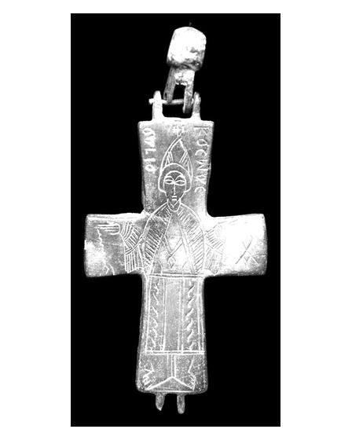

Catalog › CE-0393 · APH2017-12
Valvă izolată de encolpion din aliaj de cupru, cat. 12, Aphrodisias
nedatat · Turcia
single valve of a reliquary cross, altul; nedatat; find spot unknown.


Identificare
- Categorie
- Valvă izolată
- Material
- Altul
- Tehnică
- Gravare (incizie)
- Dimensiuni
- Î 78 × L 44 × Gr 4 mm
Iconografie
- Descriere avers
- O singură valvă cu suprafață foarte netedă, neobișnuit de lipsită de coroziune și de patină verde; mecanismul balamalei e intact în partea de sus a brațului vertical. Brațe transversale scurte și dreptunghiulare, brațe verticale ușor lărgite. Gravat Sf. Cosma, în picioare, în poziție de orant, simetric față de axa verticală; poartă o pălărie mare ascuțită, cu o cruciuliță deasupra; mantie din linii diagonale paralele dese, prinsă la gât, care se desparte pe piept și arată o tunică plată legată la brâu; pe piept un motiv romboidal, poate atârnat de gât; picioare neobișnuit de mari, fără încălțăminte. În brațul transversal stâng o cădelniță pe lanț; în cel drept un monogram omicron deasupra alfa, care poate fi citit ὁ ἅγιος. În stânga capului din nou ὁ ἅγιο[ς], în dreapta numele Κοσμᾶς.
- Inscripții
- ὁ ἅγιος; ὁ ἅγιο[ς]; Κοσμᾶς
- Limba
- Greacă
Datare și atribuire
- Datare
- nedatat
- Centru
- Necunoscut
- Tipologie
- Pitarakis (2006), forma tip I, balama tip VIII
Descoperire
- Țară
- Turcia
- Context
- Colecție (fără context)
Păstrare și referințe
- Nr. inventar
- 5837
- Bibliografie
- H. Jeffery, The Archaeology of Middle Byzantine Aphrodisias, teză DPhil în arheologie clasică, University of Oxford, aprilie 2019 [Jeffery 2019], vol. 3 (Figures), Descriptive Catalogue Four: Copper Alloy Reliquary Crosses, cat. nr. 12 (paginile nu sunt numerotate în PDF; p. PDF 441), fotografie reprodusă la p. PDF 440.
- Figura
- fotografie în catalog, fără număr de figură
- Planșe
- Jeffery 2019, vol. 3, Cat. Four, p. PDF 440
- Observații
- Locul descoperirii indicat ca „alleged”: Karacasu. Numărul de inventar e de muzeu (Museum Inventory Number); muzeul nu e numit în catalog. Autorul notează că starea curată poate veni dintr-o conservare amatoare. Cosma nu apare pe niciuna din cele 299 de cruci-relicvar cu sfinți numiți din catalogul lui Pitarakis; autorul presupune că valva lipsă ar fi purtat chipul lui Damian; costumul are paralele, pălăria poate fi unică. Dimensiuni: L. 7,8 × l. 4,4 × gros. 0,4 cm. Material: „copper alloy” (aliaj de cupru) în sursă. Coordonate: nu sunt date în sursă.
Citare: Corpus Encolpiorum, CE-0393, Valvă izolată de encolpion din aliaj de cupru, cat. 12, Aphrodisias, --root/piese/APH2017-12/ (accesat 2026-10-20).